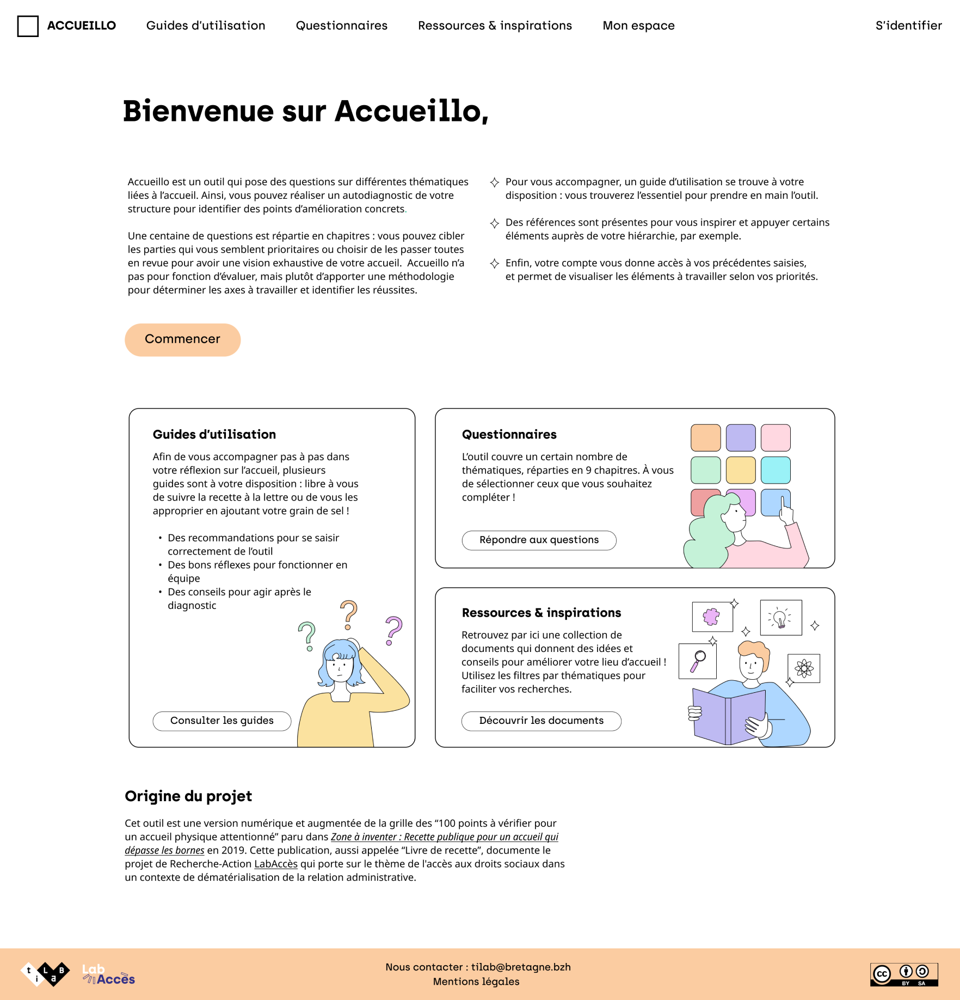
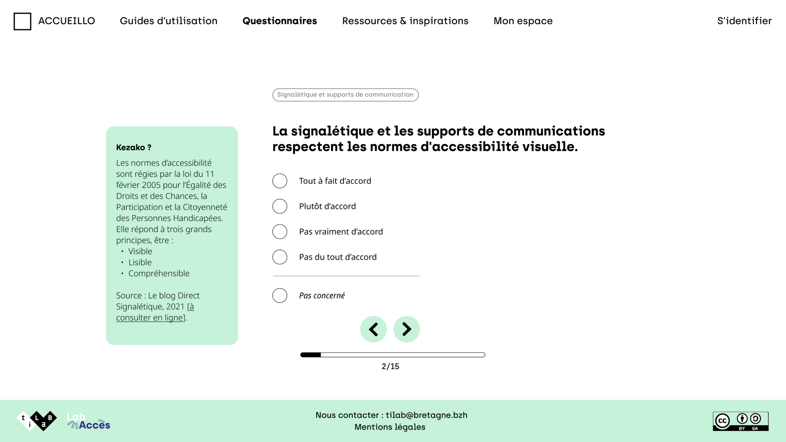
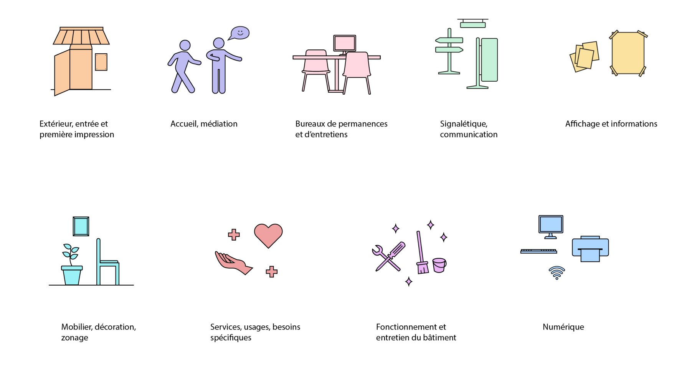
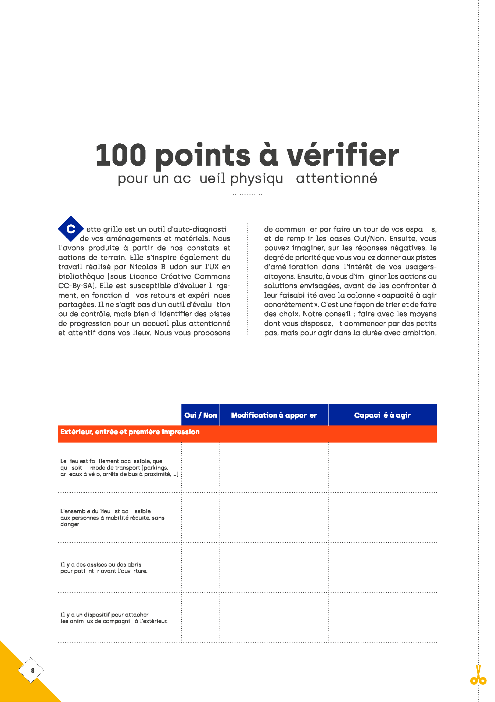
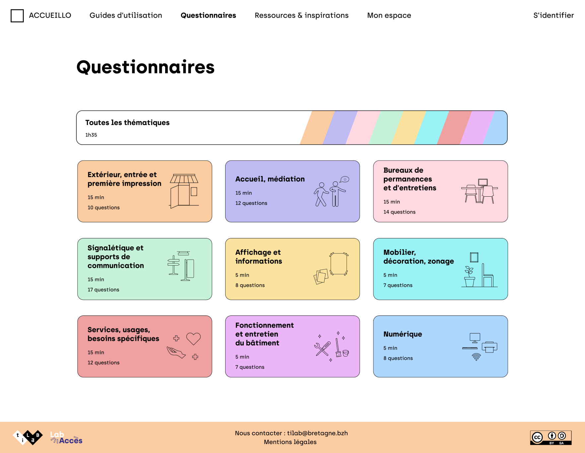
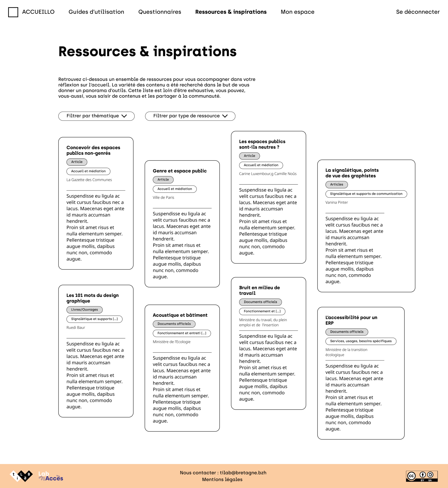
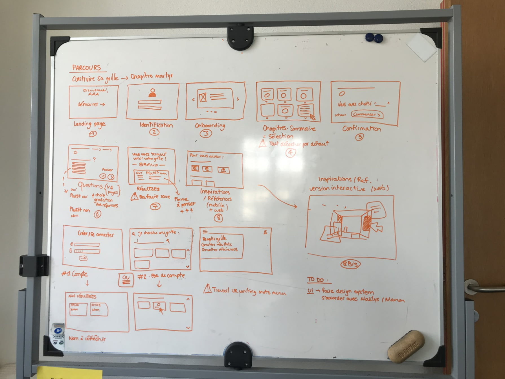
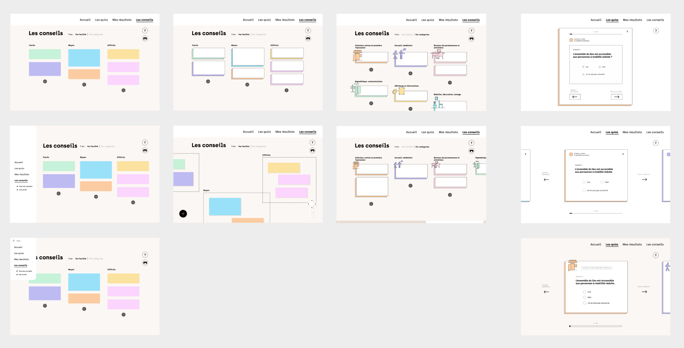
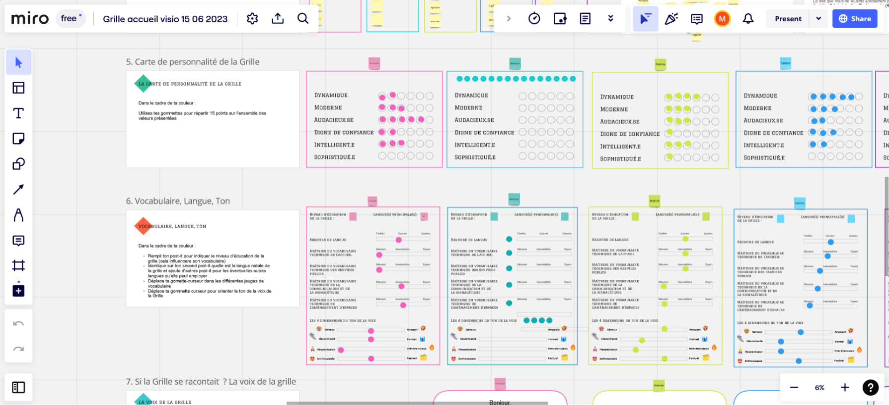

Accueillo
Interface - Outil d'auto-diagnostic
Outil numérique permettant par l’auto-diagnostic de proposer des conseils concrets d’amélioration de l’accueil.
Figma
À partir de la grille des “100 point à vérifier pour un accueil physique attentionné” paru dans Zone à inventer : Recette publique pour un accueil qui dépasse les bornes en 2019, le Ti Lab co-construit avec des professionel.les de l’accueil de différents domaines (Multiservice, Maison médicale, Bibliothèque, etc.) un prototype numérique permettant d’auto-diagnostiquer son service, et ainsi identifier les points d’amélioration et leurs leviers en proposant des conseils concrets ainsi que des ressources sur l’accueil dans les services publics.
Mon rôle dans le projet : création et facilitation d'ateliers de co-création, design de l'interface et maquettage Figma, préparation des tests UX.








